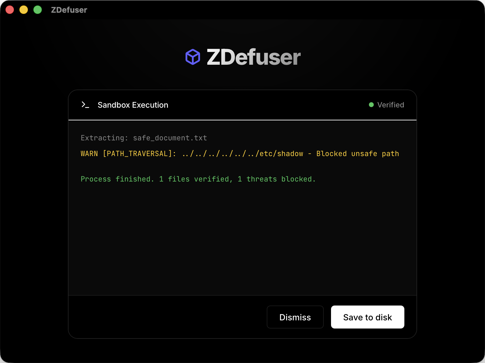

Unpack With Zero Trust.
Stop malicious payloads before they ever touch your operating system. ZDefuser uses absolute WebAssembly isolation to physically quarantine archive extraction—guaranteeing 100% protection against zero-day zip bombs, path traversals, and embedded malware.

8 Attack Vectors. Zero Impact.
Traditional anti-virus relies on knowing the threat. ZDefuser assumes every file is hostile until proven otherwise.
Zip Bombs
Detects and mitigates multi-level decompression bombs by enforcing strict scaling ratios alongside Dynamic Compute Rationing (Fuel Allocation).
Path Traversal
Impossible by design. The extraction engine operates within a WASI virtual filesystem. It
physically cannot write to /etc or C:\Windows.
Memory Exploits
Written entirely in pure Rust. No C/C++ memory vulnerabilities, eliminating buffer overflows and remote code execution (RCE).
Right-to-Left Override
Sanitizes hostile Unicode filenames (RTLO spoofing), ensuring that what looks like a harmless
.txt file doesn't secretly deploy an .exe.
Symlink Isolation
Zero tolerance for illegal directory references and symbolic shortcuts, preventing host private keys and config files from stealthy exfiltration.
Executable Bit Stripping (Unix Only)
Through the Layer-3 Release Gate, any stealthy +x script permissions implanted by attackers are forcibly stripped, downgrading malicious executables to harmless text.
Encrypted Vectors
Safely handles AES-encrypted ZIPs and RARs. Even if an archive mandates a password, the decryption occurs strictly within the quarantine zone.
No Network Leakage
WASI network sockets are entirely disabled. Extracted spyware cannot ping external command-and-control servers.
The WebAssembly Quarantine Zone
When you drop a file into ZDefuser, we don't scan it—we detonate it inside a mathematical cage.
- Wasmtime Runtime: Extraction happens in a compiled
wasm32-wasip1bytecode sandbox with zero host access. - WASI Constraints: The virtual OS is jailed to precisely one isolated `preopened_dir` (`/sandbox`) which exclusively contains the target archive and extraction destination, locking out all host directories.
- Dynamic Scheduling: CPU cycles (Fuel) are dynamically rationed based on original archive size, securely unpacking 50GB files while instantly terminating infinite-loop zero-day logic bombs.
- Enterprise Compliance: Built-in deep license auditing automatically satisfies MIT, Apache, and BSD open-source redistribution requirements out of the box.